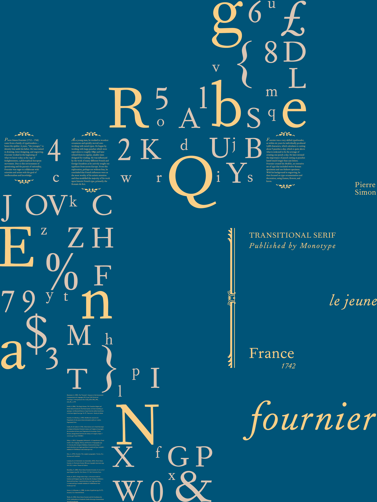
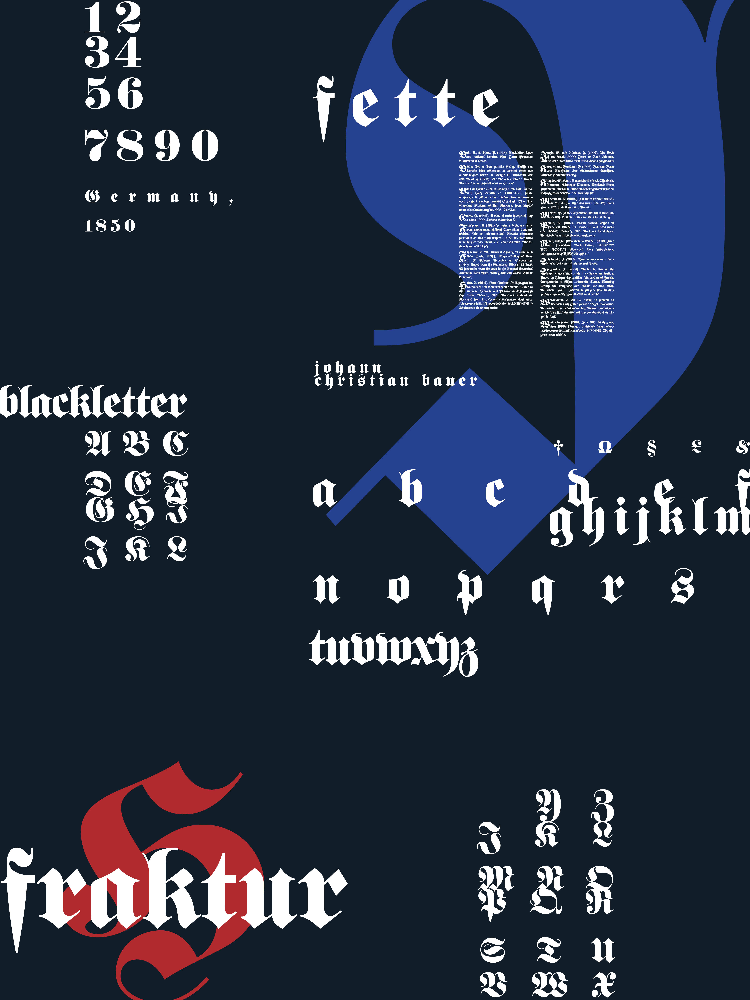

MAJ JENKINS.
TYPOGRAPHY POSTERS
This assignment required students to research different significant historical typefaces and produce compositions based upon their history.
Iwan Reschniev by Jan Tschichold
This typeface was the product of Jan Tschichold’s method for creating typeforms: A series of instructions that detailed how to easily construct type without having any prior typographic experience. This was the only typeface that Tschichold produced by the use of a grid and was directed towards individuals that were not typographers by practice, but rather business people such as shop owners and signmakers and other artists that worked in mediums such as photomontage, because they could replicate his typeforms using the grid. This typeface was later digitized by FDI Foundry and named Iwan Reschniev, but at its time of its original publishing in 1930, it was featured in only eight journals, one of which describes it as letters which “can be made by everyone.”
The sans-serif type is part of Tschichold’s early years of work, in which he was influenced heavily by the Bauhaus and Russian Constructivism. This “New Typography,” during the late 1920s and early 1930s in Germany, represented social progression, in contrast to the Blackletter which represented an adherence to German nationalism, ran Tschichold into conflict with the Nazis, who viewed his work as “Kultur-Bolshvismus,” or “culture Bolshevism.”
In showing his alliance with the Russian revolutionary spirit and defiance of the Nazi regime, Tschichold changed his birth name, Johannes, to Ivan (which was sometimes spelt Iwan), before finally naming himself Jan. In 1933, Tschichold and his wife would be arrested by the Nazis and then emigrate to Switzerland after he was released 6 months later. Later, in a change of heart that would confuse many designers that followed his work, Tschichold would reverse his opinion on the New Typography and equate it with fascism, striking parallels between the style of type and the Nazi regime.

Burke, Christopher. (2007). Active literature : Jan Tschichold and New Typography (pp. 178–181). London : Hyphen.
Doubleday, Richard B. (2006). Jan Tschichold, Designer: The Penguin Years. New Castle, Del. : Oak Knoll Press ; Aldershot, U.K. : Lund Humphries.
FDI Type Foundry. “Iwan Reschniev.” Retrieved from https://fdi-type.de/fonts/iwan-reschniev/
Forum Typografie. (2012, Dec. 3). “Sketches by Jan Tschichold.” Typography.Guru. Retrieved from https://typography.guru/journal/sketches-by-jan-tschichold-r13/.
Jong, Cees de. (2008). Jan Tschichold, master typographer : his life, work, & legacy. London : Thames & Hudson.
McLean, Ruari. (1990). Jan Tschichold: Typographer. Boston : D.R. Godine.
Spencer, Herbert. (1969). Jan Tschichold. In Pioneers of Modern Typography. (pp. 147–154). Lund Humphreys.
Tschichold, J., & Bringhurst, R. (1992). The form of the book : essays on the morality of good design. Lund Humphries.
Tschichold, J., & McLean, R. (1995). The new typography : a handbook for modern designers. University of California Press.
Typography Guru. (May 6, 2012). “7 Questions for FDI type designer Sebastian Nagel.” Retrieved from https://typography.guru/journal/7-questions-for-fdi-type-designer- sebastian-nagel-r74/
Fournier by Pierre Simon Fournier
Pierre Simon Fournier (1712 – 1768) came from a family of typefounders—hence the epithet le jeune, “the younger,” to identity him aside his father. He was trained in drawing, letter designing, and engraving. Fournier worked in the beginning of what we know today as the Age of Enlightenment, a philosophical European movement. Due to this environment of questioning and the pursuit of rationality, Fournier was eager to collaborate with scientists and artists with the goal of intellectualism and knowledge.
As a young man, he worked in woodcut ornaments and quickly moved onto working with metal types. He began by working with large punches which were equivalent to roughly 108pt and later refined them in regular, smaller sizes designed for reading. He was influenced by the work of many different French and foreign foundries as he actively sought out typefaces from across Europe. From this exploration, perhaps not without bias, he concluded that French influences were as the most worthy of his artistic attention and thus modelled the majority of his work upon historic French type, primarily Garamond.
Fournier was a very skilled typefounder, as within six years he individually produced 4,600 characters, which calculates to cutting about 5 punches a day, which is quite above what is reckoned to be the average of creating one punch a day. He later stressed the importance of punch cutting as punches lasted much longer than cast letters. Fournier created his Modèles, an extensive set of type that included twelve Roman specimens and one Hebrew specimen. With his background in engraving, he then focused on type ornamentation and decoration, using frames, flowers, and knots.

Blanchard, G. (1989). The "Fournier": character of the bicentennial. Communication & Languages, 82 (1), pp. 32-48. Retrieved from https://www.persee.fr/ doc/colan_0336-1500_1989_num_82_1_1135.
Dodd, R. (2006). The King’s Roman: The Transition Begins and Pierre Simon Fournier & The Point System. In From Gutenberg to opentype: An illustrated history of type from the earliest letterforms to the latest digital fonts (pp. 44–47). Vancouver : Hartley & Marks.
Fournier, P. & Mosley, J. (1965). Modéles des caracteres de l'imprimerie: Et des autres choses nécessaires audit art. London: Eugrammia Press.
Gando, M. & Gando, P. (1766). Observations sur le Traité historique et critique de Monsieur Fournier le jeune, sur l'origine et les progrès des caractères de fonte, pour l'impression de la musique. Berne: Moreau. [Image] Retrieved from the Library of Congress, https://www.loc.gov/item/13012864/.
Haley, A. (2012). Typography, Referenced : A Comprehensive Visual Guide to the Language, History, and Practice of Typography (pp. 11). Beverly, MA: Rockport Publishers. Retrieved from http://search.ebscohost.com/login.aspx?direct=true& AuthType=sso&db=nlebk&AN=576493&site=eds-live&scope=site
Hutt, A. (1972). Fournier: The compleat typographer. Totowa, N.J. : Rowman and Littlefield.
Lommen, M., & Universiteit van Amsterdam. (2012). Pierre Simon Fournier. In The book of books: 500 years of graphic innovation (pp. 210–215). London: Thames & Hudson.
Macmillan, N. (2006). Pierre Simon Fournier (le jeune). In An A-Z of type designers (pp. 84). New Haven, CT: Yale University Press.
Poulin, R. (2017). Design School Type : A Practical Guide for Students and Designers (pp. 34). Beverly, MA: Rockport Publishers. Retrieved from http://search.ebscohost.com/login.aspx?direct=true&AuthType=sso&db=nlebk&AN=162 8622&site=eds-live&scope=site
Sutton, J., & Bartram, A. (1988). An atlas of typeforms (pp. 56–57). Secaucus, N.J: Chartwell Books.
Warde, B. (1928). Pierre Simon Fournier und die Druckkunst des XVIII. Jahrhunderts in Frankreich. Berlin: Monotype Setzmaschinen Vertriebsgesellschaft.
Fette Fraktur by Johann Christian Bauer
For my third poster, I was inspired by the tradition of the blackletter as a way of writing and its contemporary usage. From looking at manuscripts (Biblia, 1633 and Fuhrmann, 1940), I found the bold calligraphic strokes of decorative initials interesting as a way to draw attention to a new paragraph. Due to this aspect of these manuscripts, I was inspired to place large letterforms in the background of my composition to create focalness.
In addition, I also felt the texture of tightly-tracked letterforms in manuscripts (Carter, 1969 and Fuhrmann, 1940) was a key component in the use of blackletter. In Blackletter: Type and national identity, Philipp Luidl describes how letters in fraktur are closer together than they are in Roman type, so that fraktur type would take up ¼ of a space that Roman type would take up ⅓ of. As I kept this in mind, I wanted to use tighter tracking for fette fraktur than I would have for a serif font to create this unique texture.
I was pulled in two separate directions in respect to color usage. I was influenced by both the manuscripts I looked at and the use of blackletter in contemporary art. Illuminated manuscripts are very colorful and use a variety of pigments to achieve detailed drawings (Book of Hours, c. 1460-1465). I also considered how blackletter is a popular choice in current fashion (Watamanuk, 2016) and tattoos (Romo, 2019), particularly used by heavy metal (Spitzmüller, 2007), punk rock, hip-hop, and grunge (Fleischmann, 2011). These subcultures are known for wanting to make bold statements and incorporate the dark and edgy into art. I was influenced by goth zines from the 1990s (Westrodorpress, 2016) to use a choice of dark and warm colors.
